Releasenotes eBlinqx Hypotheekadvies – Augustus 2024
Onderstaande updates hebben wij in de maand augustus doorgevoerd:
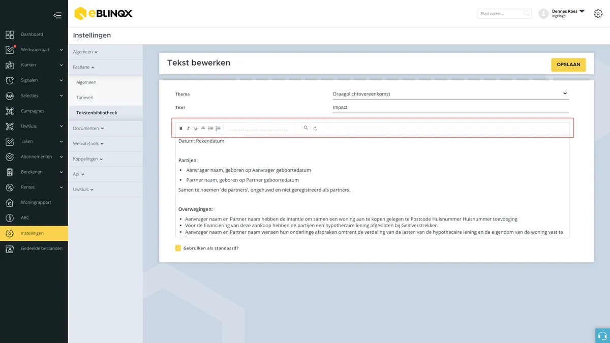
IT-20811: Header tekstblok in tekstenbibliotheek
In de tekstenbibliotheek hebben we nu de kop van het tekstveld vastgezet. Bij langere teksten raakten de optionele dynamische velden en de functies om tekst te benadrukken buiten beeld. Dit probleem is nu opgelost.
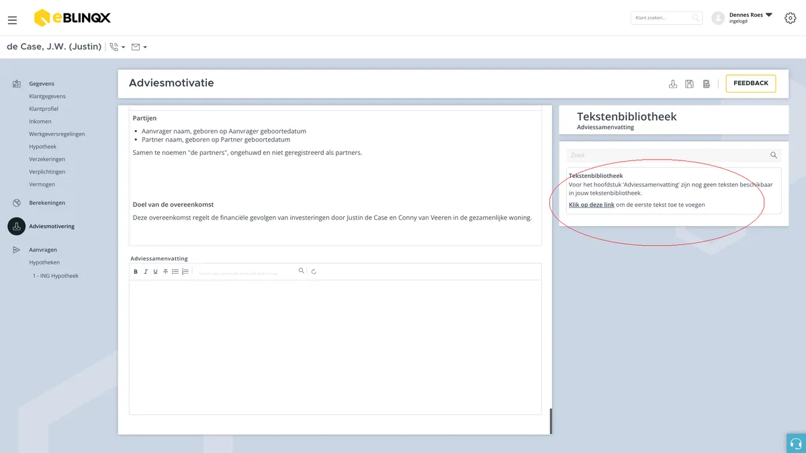
IT-21284: Tekstenbibliotheek: Geen tekst bij een specifiek hoofdstuk/onderdeel
Als je bij een bepaald hoofdstuk of onderdeel van je advies, zoals ‘Adviessamenvatting’, nog geen teksten hebt toegevoegd aan je tekstenbibliotheek, krijg je de volgende melding te zien: ‘‘Voor het hoofdstuk Adviessamenvatting zijn nog geen teksten beschikbaar in jouw tekstenbibliotheek. Klik op deze link om de eerste tekst toe te voegen’.
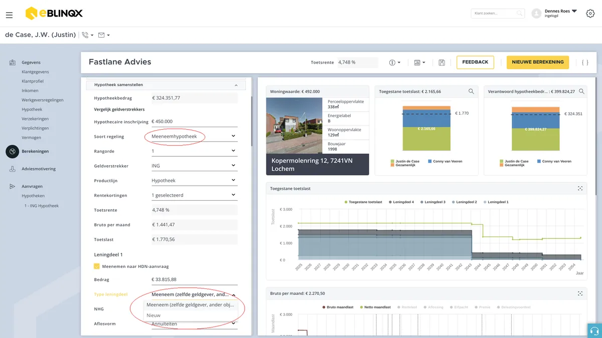
IT-21258: HDN-ondersteuning bij doelstelling ‘Een bestaande woning kopen’
Bij het samenstellen van een hypotheek in Fastlane Advies moet je altijd de velden ‘Soort regeling’ en ‘Type leningdeel’ invullen. Deze velden zijn verplicht in het HDN-aanvraagformulier.
Hoewel het HDN-formulier meerdere opties biedt (acht voor ‘Soort regeling’ en vijf voor ‘Type leningdeel’), blijft de keuze in de praktijk vaak beperkt tot twee mogelijkheden. Om je te helpen de juiste keuze te maken, hebben we in Fastlane Advies het aantal opties aangepast op basis van de gekozen doelstelling.
Voor de doelstelling ‘Een bestaande woning kopen’ heb je de volgende keuze
Soort regeling (hypotheek)
- Eerste hypotheek (nieuw)
- Meeneemhypotheek (indien je de hypotheekrente wilt meeverhuizen)
Type leningdeel (leningdelen)
- Meeneem (voor het leningdeel waarvan je de rente wilt meeverhuizen naar het volgende onderpand)
- Nieuw (voor het aanvullende leningdeel dat nodig is)
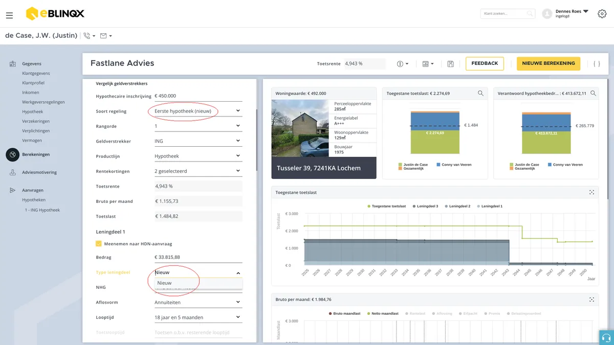
IT-21260: HDN-ondersteuning bij doelstelling ‘Een nieuwwoning kopen’
Bij het samenstellen van een hypotheek in Fastlane Advies moet je altijd de velden ‘Soort regeling’ en ‘Type leningdeel’ invullen. Deze velden zijn verplicht in het HDN-aanvraagformulier.
Hoewel het HDN-formulier meerdere opties biedt (acht voor ‘Soort regeling’ en vijf voor ‘Type leningdeel’), blijft de keuze in de praktijk vaak beperkt tot twee mogelijkheden. Om je te helpen de juiste keuze te maken, hebben we in Fastlane Advies het aantal opties aangepast op basis van de gekozen doelstelling.
Voor de doelstelling ‘Een nieuwbouwwoning kopen’ heb je de volgende keuzes:
Soort regeling (hypotheek)
- Eerste hypotheek (nieuw)
- Meeneemhypotheek (indien je de hypotheekrente wilt meeverhuizen)
Type leningdeel (leningdelen)
- Meeneem (voor het leningdeel waarvan je de rente wilt meeverhuizen naar het volgende onderpand)
- Nieuw (voor het aanvullende leningdeel dat nodig is)
IT-21263: HDN-ondersteuning bij doelstelling ‘Mijn hypotheek oversluiten’
Bij het samenstellen van een hypotheek in Fastlane Advies moet je altijd de velden ‘Soort regeling’ en ‘Type leningdeel’ invullen. Deze velden zijn verplicht in het HDN-aanvraagformulier.
Hoewel het HDN-formulier meerdere opties biedt (acht voor ‘Soort regeling’ en vijf voor ‘Type leningdeel’), blijft de keuze in de praktijk vaak beperkt tot twee mogelijkheden. Om je te helpen de juiste keuze te maken, hebben we in Fastlane Advies het aantal opties aangepast op basis van de gekozen doelstelling.
Voor de doelstelling ‘Mijn hypotheek oversluiten’ heb je de volgende keuzes:
Soort regeling (hypotheek)
- Interne oversluiting (je adviseur je klant om bij dezelfde geldverstrekker te blijven)
- Oversluiting andere geldgever (je adviseert een andere geldverstrekker)
Type leningdeel (leningdelen)
- Nieuw
- Verhoging (hoger geldbedrag)
*) Beide opties kunnen. In de praktijk gebruiken de meeste geldverstrekkers de optie 'Nieuw'

IT-21265: HDN-ondersteuning bij doelstelling ‘Mijn overwaarde opnemen’
Bij het samenstellen van een hypotheek in Fastlane Advies moet je altijd de velden ‘Soort regeling’ en ‘Type leningdeel’ invullen. Deze velden zijn verplicht in het HDN-aanvraagformulier.
Hoewel het HDN-formulier meerdere opties biedt (acht voor ‘Soort regeling’ en vijf voor ‘Type leningdeel’), blijft de keuze in de praktijk vaak beperkt tot twee mogelijkheden. Om je te helpen de juiste keuze te maken, hebben we in Fastlane Advies het aantal opties aangepast op basis van de gekozen doelstelling.
Voor de doelstelling ‘Mijn overwaarde opnemen’ heb je de volgende keuzes:
Soort regeling (hypotheek)
- Onderhands (verhoging past binnen bestaande inschrijving)
- Tweede of hoger in rang hypotheek (klant moet nieuwe hypotheekakte vestigen)
Type leningdeel (leningdelen)
- Nieuw
- Verhoging (hoger geldbedrag)
*) Beide opties kunnen. In de praktijk gebruiken de meeste geldverstrekkers de optie 'Nieuw'
IT-21262: HDN-ondersteuning bij doelstelling ‘Mijn woning verbouwen’
Bij het samenstellen van een hypotheek in Fastlane Advies moet je altijd de velden ‘Soort regeling’ en ‘Type leningdeel’ invullen. Deze velden zijn verplicht in het HDN-aanvraagformulier.
Hoewel het HDN-formulier meerdere opties biedt (acht voor ‘Soort regeling’ en vijf voor ‘Type leningdeel’), blijft de keuze in de praktijk vaak beperkt tot twee mogelijkheden. Om je te helpen de juiste keuze te maken, hebben we in Fastlane Advies het aantal opties aangepast op basis van de gekozen doelstelling.
Voor de doelstelling ‘Mijn woning verbouwen’ heb je de volgende keuzes:
Soort regeling (hypotheek)
- Onderhands (verhoging past binnen bestaande inschrijving)
- Tweede of hoger in rang hypotheek (klant moet nieuwe hypotheekakte vestigen)
Type leningdeel (leningdelen)
- Nieuw
- Verhoging (hoger geldbedrag)
*) Beide opties kunnen. In de praktijk gebruiken de meeste geldverstrekkers de optie 'Nieuw'
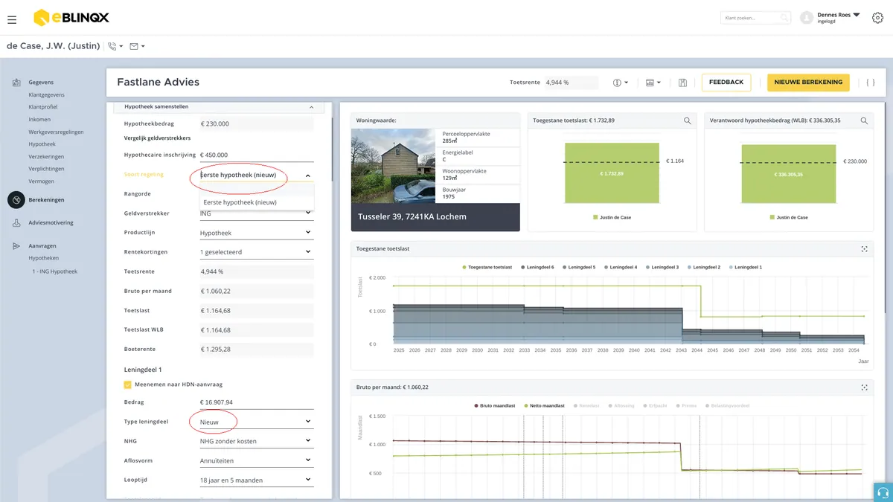
IT-21266: HDN-ondersteuning bij doelstelling ‘Ontslag uit hoofdelijke aansprakelijkheid’
Bij het samenstellen van een hypotheek in Fastlane Advies moet je altijd de velden ‘Soort regeling’ en ‘Type leningdeel’ invullen. Deze velden zijn verplicht in het HDN-aanvraagformulier.
Hoewel het HDN-formulier meerdere opties biedt (acht voor ‘Soort regeling’ en vijf voor ‘Type leningdeel’), blijft de keuze in de praktijk vaak beperkt tot één mogelijkheid. Om je te helpen de juiste keuze te maken, hebben we in Fastlane Advies het aantal opties aangepast op basis van de gekozen doelstelling.
Voor de doelstelling ‘Ontslag uit hoofdelijke aansprakelijkheid’ heb je de volgende keuze:
Soort regeling (hypotheek)
- Eerste hypotheek (nieuw)
Type leningdeel (leningdelen)
- Nieuw
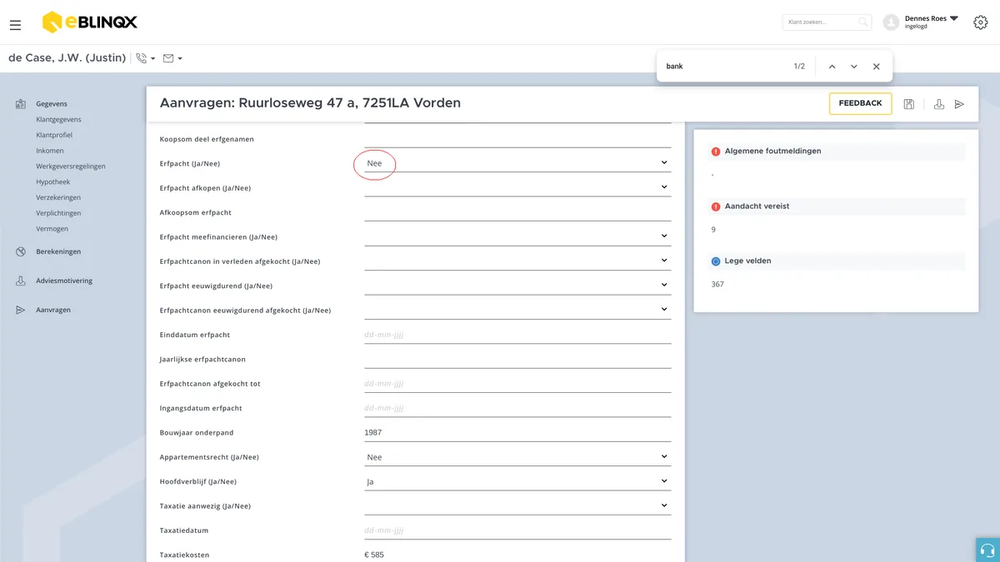
IT-21060: Erfpacht in HDN-aanvraagformulier
Wanneer de checkbox 'Erfpacht' bij de onderpandgegevens in eBlinqx Hypotheekadvies niet is aangevinkt, wordt in het HDN-aanvraagformulier de vraag 'Erfpacht afkopen (Ja/Nee)' automatisch met 'NEE' beantwoord.
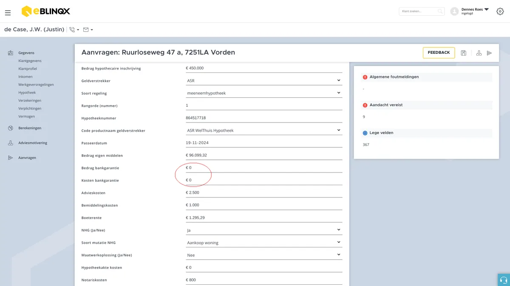
IT-21083: Informatie bankgarantie in HDN-aanvraagformulier
Als de kosten voor de bankgarantie in de financieringsopzet op € 0,00 staan, worden in het HDN-aanvraagformulier het 'Bedrag bankgarantie' en de kosten van de bankgarantie automatisch ingevuld met € 0,00. Daarnaast wordt de vraag 'Geldverstrekker is aanbieder bankgarantie (Ja/Nee)' automatisch beantwoord met NEE.
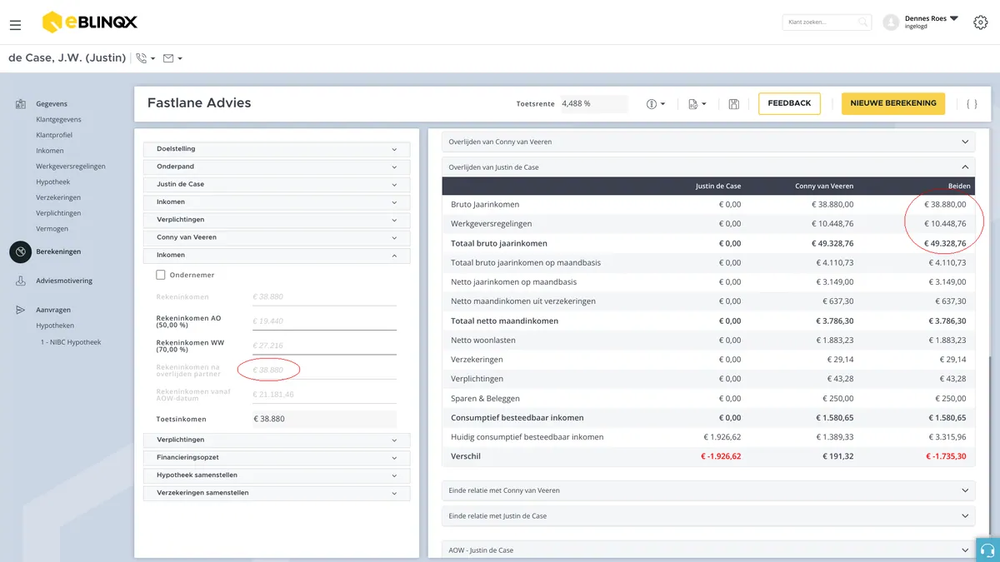
IT-21117: Rekeninkomen na overlijden
Na het overlijden van de aanvrager kan het inkomen van de mede-aanvrager toenemen door een nabestaandenpensioen via de werkgever. Dit hogere bedrag vermelden we NIET onder het kopje 'Inkomen' in Fastlane Advies bij 'Rekeninkomen na overlijden aanvrager', maar WEL bij de acceptatienormen. Het inkomen onder het kopje 'Inkomen' in Fastlane Advies is het totaalbedrag van alle inkomstenbronnen uit het tabblad 'Inkomen' en niet uit het tabblad 'Werkgeversregelingen'. Het rekeninkomen na overlijden is niet langer handmatig aanpasbaar in bovenstaand scherm.
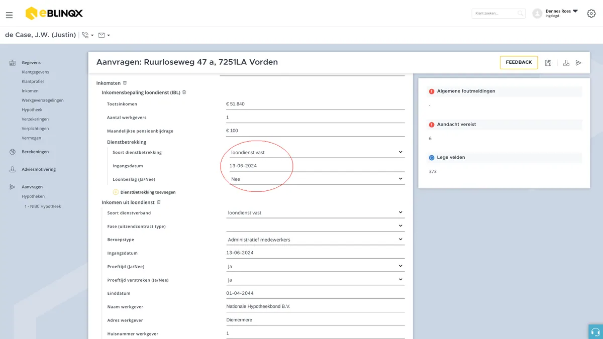
IT-21057: IBL velden geprefilled
Bij Inkomensbepaling loondienst (IBL) worden de onderstaande velden nu geprefilled in het HDN-aanvraagformulier:
-
Soort dienstbetrekking
-
Ingangsdatum
-
Loonbeslag (Ja/Nee)
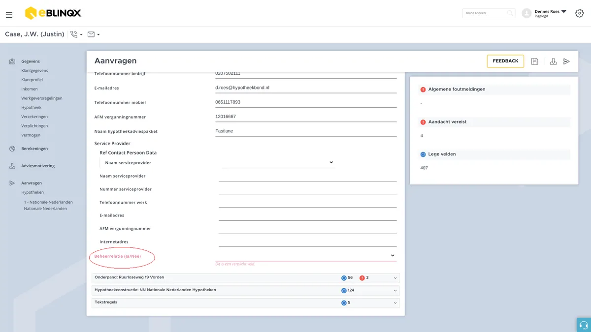
IT:19943: Beheerrelatie
De vraag ‘Beheerrelatie’ Ja/Nee gaan wij in het HDN-aanvraagformulier prefillen met het antwoord JA
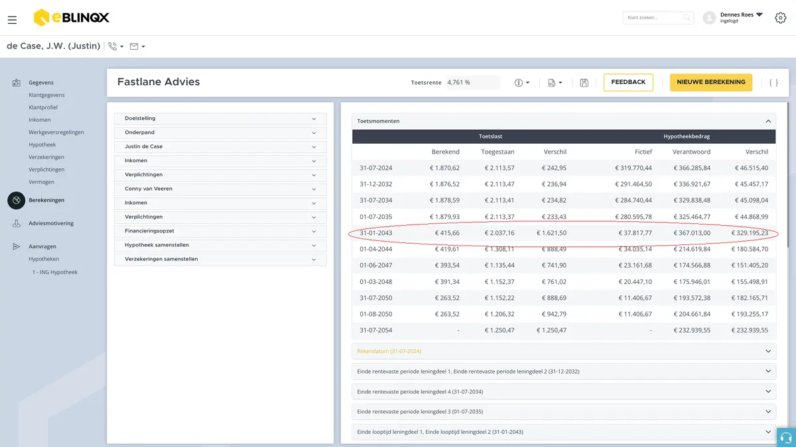
IT-20952: Toetsmomenten -> Einde looptijd leningdeel
Als de einddatum van een leningdeel is bereikt, wordt de bijbehorende toetslast niet langer meegenomen in de berekende toetslast binnen Fastlane Advies.
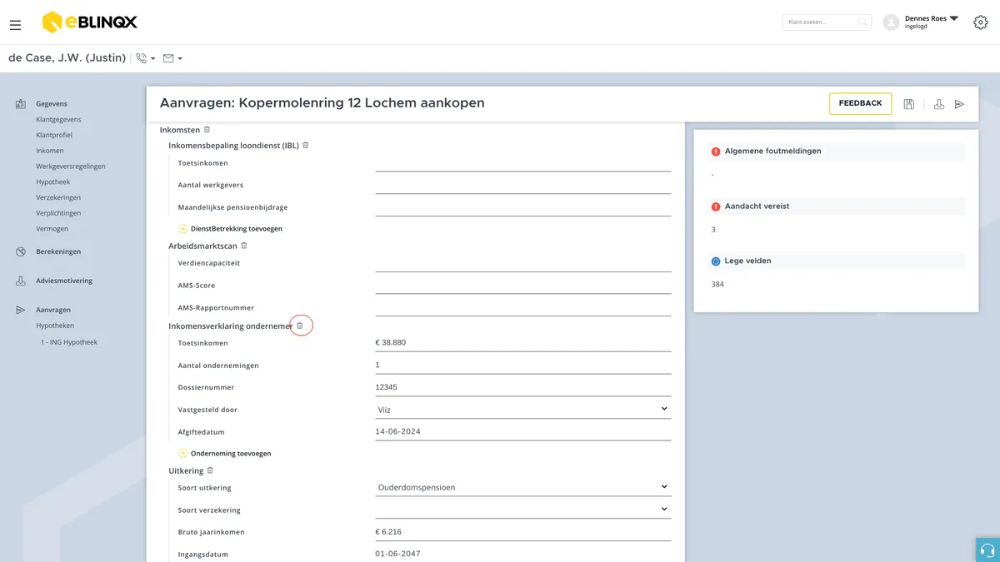
IT-19933: HDN Feedback: Prullenbakje achter 'Inkomensverklaring ondernemer'
We hebben een prullenbak-icoon toegevoegd achter de titel 'Inkomensverklaring ondernemer' in het HDN-aanvraagformulier, zodat de adviseur dit onderdeel gemakkelijk kan verwijderen indien gewenst.
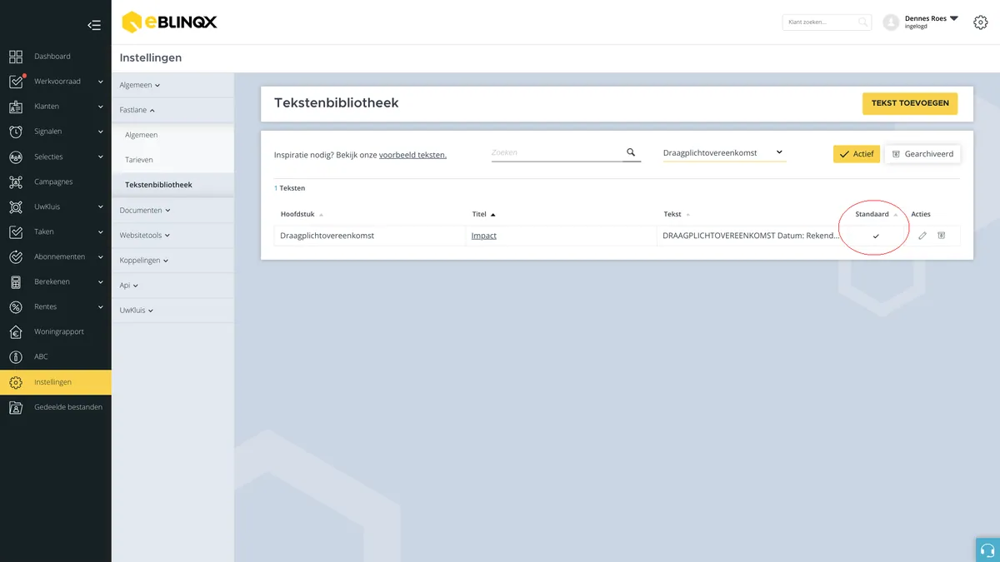
IT-20715: Tekstblok 'altijd' gebruiken in adviesrapport
Bij de tekstenbibliotheek hebben we de extra optie 'Gebruik als standaard?' toegevoegd. Als de adviseur JA kiest, dan wordt de motivatietekst automatisch opgenomen in ieder adviesrapport.
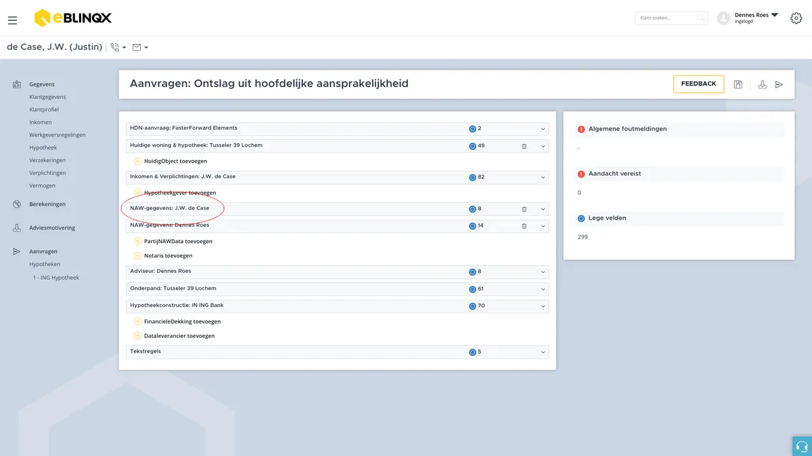
IT-20386: Vertrekkende partner bij 'Ontslag hoofdelijke aansprakelijkheid'
Bij de doelstelling 'Ontslag uit hoofdelijke aansprakelijkheid' wordt de 'ontslagen'partner automatisch uit de HDN-aanvraag verwijderd.
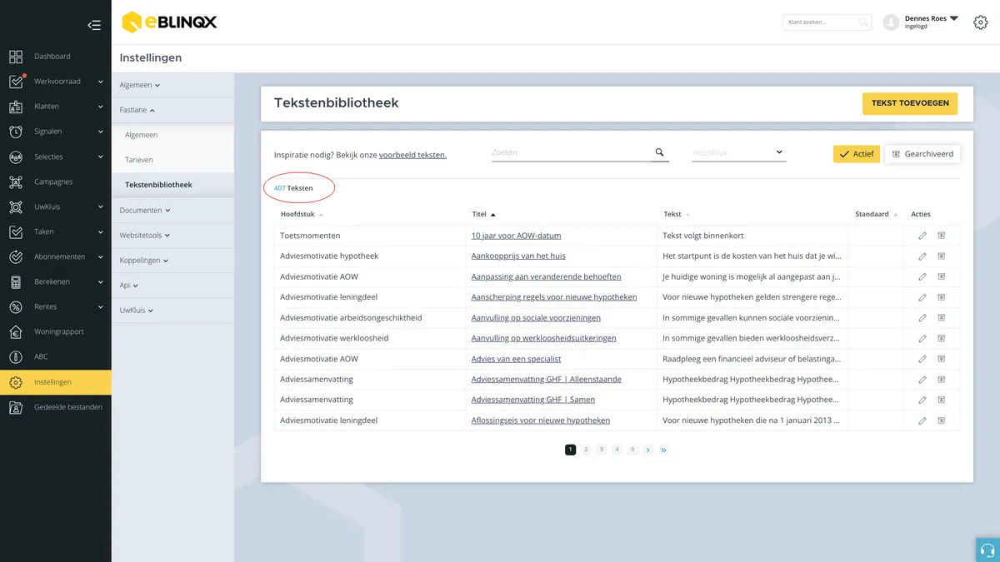
IT-20819: Aantal teksten in tekstenbibliotheek
Vanaf nu geven we het totale aantal beschikbare teksten in de tekstenbibliotheek aan.
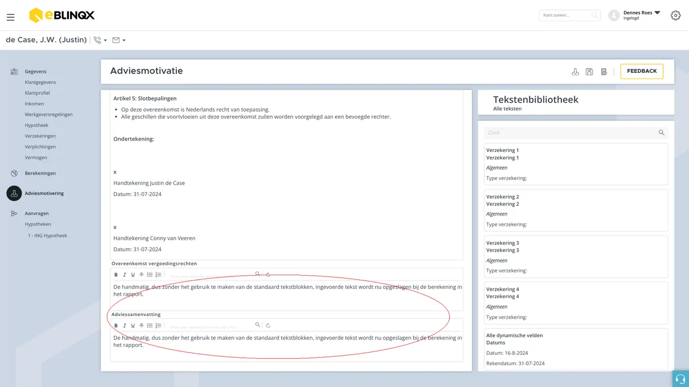
IT-21069: Opslaan handmatig ingevoerde teksten
Als ik als adviseur GEEN gebruik maak van de standaard teksten uit de tekstenbibliotheek, maar deze handmatig invoer, dan worden deze teksten nu opgeslagen bij de berekening zelf. Dit geldt voor de onderdelen:
- Nazorg
- Afspraken en beloning
- Draagplichtovereenkomst
- Overeenkomst vergoedingsrechten
- Adviessamenvatting
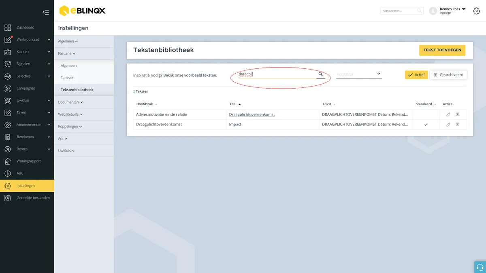
IT-20819: Zoeken in tekstenbibliotheek
We hebben een zoekfunctie toegevoegd aan onze tekstenbibliotheek. Hiermee kun je nu sneller een specifieke tekst vinden.
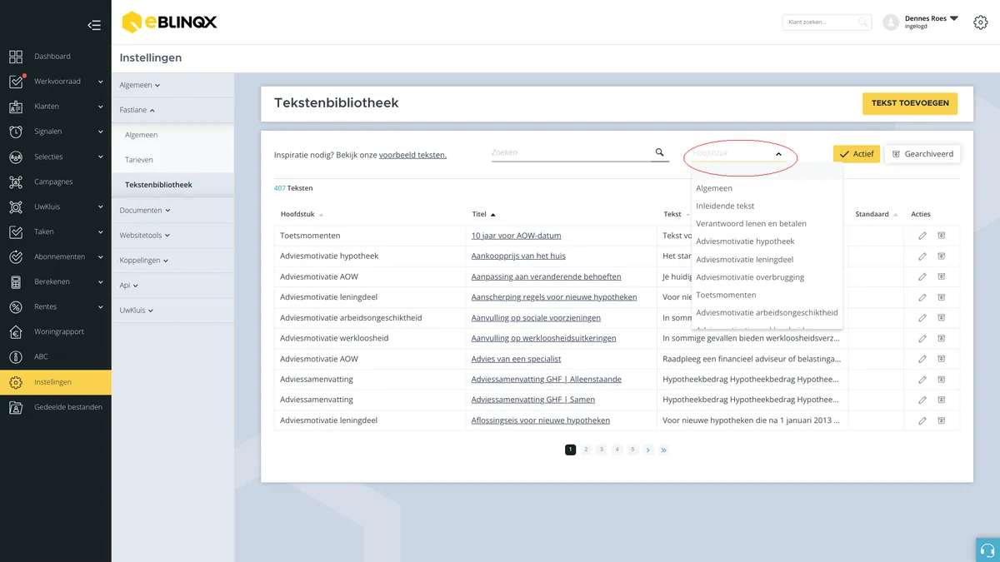
IT-20819: Filteren in de tekstenbibliotheek
Vanaf nu kun je alle teksten in de tekstenbibliotheek filteren. Hierdoor wordt het makkelijker en sneller om een bestaande tekst te vinden.
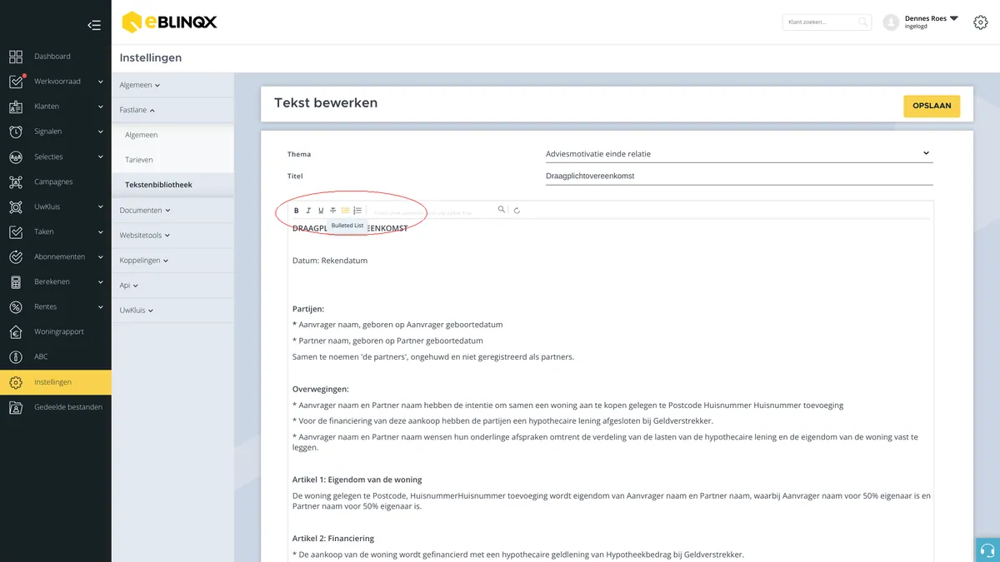
IT-20815: Tekstopmaak tekstenbibliotheek
Vanaf nu kun je in de tekstenbibliotheek jouw eigen teksten voorzien van: doorhalingen, opsommingstekens en genummerde lijsten. Dit zorgt ervoor dat het adviesrapport nog beter leesbaar wordt voor je klant.
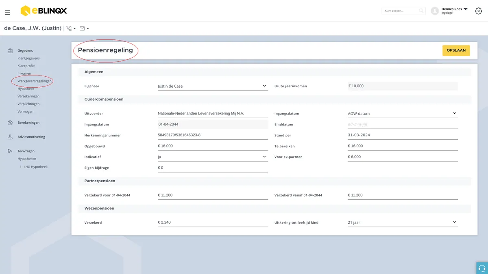
'IT-18386: Ouderdomspensioen' binnen 'Werkgeversregelingen' in Fastlane Advies.
Vanaf nu wordt het ingevoerde ouderdomspensioen, partnerpensioen en wezenpensioen automatisch toegevoegd aan het (toekomstig) inkomen van je klant.
Pensioenregelingen kunnen nu alleen nog worden ingevoerd onder 'Werkgeversregelingen'. Het ouderdomspensioen blijft wel zichtbaar bij 'Inkomensgegevens', maar je kunt het daar niet meer aanpassen.
Nieuw in te voeren regelingen:
Vanaf deze release kun je ouderdomspensioen alleen nog invoeren bij 'Werkgeversregelingen'. Ouderdomspensioenen die eerder bij 'Inkomensgegevens' zijn ingevoerd, worden niet automatisch overgezet. Ze blijven alleen-lezen binnen 'Inkomensgegevens'. Als je wijzigingen wilt aanbrengen, moet je een nieuwe regeling invoeren bij 'Werkgeversregelingen' en de oude handmatig verwijderen om dubbele invoer te voorkomen.
Dubbel ingevoerde regelingen:
Als ouderdomspensioenen zowel bij 'Inkomensgegevens' als bij 'Werkgeversregelingen' zijn ingevoerd, worden ze als twee aparte regelingen beschouwd. Dit kan leiden tot een te hoog ouderdomspensioen, wat automatisch wordt meegenomen bij het bewerken van bestaande of het aanmaken van nieuwe hypotheekberekeningen.
Tot slot:
Let de komende tijd extra goed op de hoogte van het ouderdomspensioen van je klant in eBlinqx Hypotheekadvies, zodat je altijd een passend advies kunt geven.
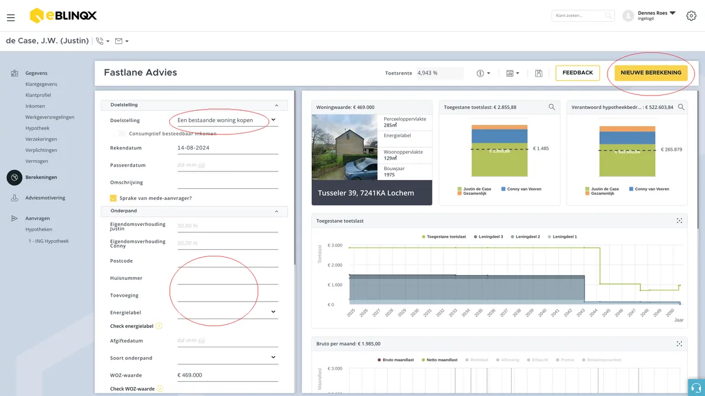
IT-18960: 'Oude' onderpandgegevens automatisch verwijderd
Als je een nieuwe berekening start vanuit de doelstelling 'Huidige situatie evalueren' en daarna kiest voor 'Een bestaande woning kopen' of 'Een nieuwbouwwoning kopen', hoef je niet meer handmatig de gegevens van het bestaande onderpand te verwijderen. Deze worden nu automatisch uit de berekening gehaald. Hierdoor kun je meteen beginnen met het invoeren van de postcode, het huisnummer en eventuele toevoeging van de nieuwe woning, wat het proces efficiënter en eenvoudiger maakt.
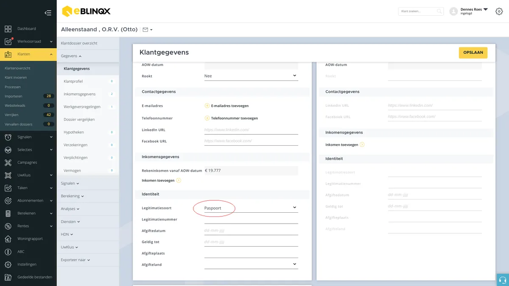
IT-20068: Legitimatiesoort
Vanaf nu is het alleen nog verplicht om het legitimatiesoort in te vullen wanneer de adviseur ervoor kiest om de legitimatiegegevens alvast te inventariseren. De adviseur kan dus eerst het soort legitimatie selecteren, zonder dat direct alle bijbehorende gegevens ingevuld hoeven te worden.
Uit feedback van gebruikers bleek dat adviseurs vaak wel het type legitimatie weten, maar nog niet alle details ervan beschikbaar hebben. Om het inventariseren eenvoudiger en efficiënter te maken, hebben we deze aanpassing doorgevoerd. Dit sluit ook aan bij de richtlijnen van het HDN-schema, waarin alleen het geslacht en het legitimatiesoort verplicht gesteld zijn.
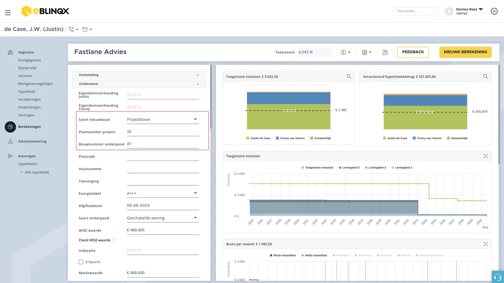
IT-20557: Nieuwbouwvelden gemapt haar HDN-aanvraagformulier
eBlinqx Hypotheekadvies heeft nu inhoud van de onderstaande nieuwbouwvelden nu gemapt naar het HDN-aanvraagformulier:
-
Soort nieuwbouw
-
Plannummer project
-
Bouwnummer onderpand
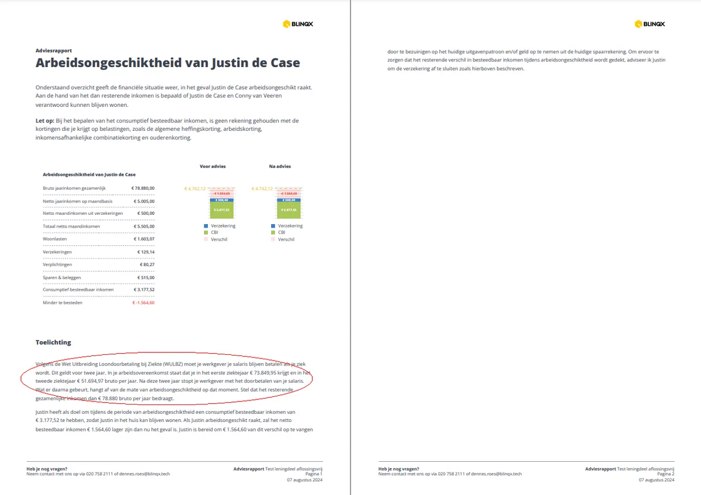
IT-20983: Toelichting bij thema arbeidsongeschiktheid mede-aanvrager
In de adviesmotivatie is nu ook de introductietekst inzake de WULBZ voor de mede-aanvrager toegevoegd.
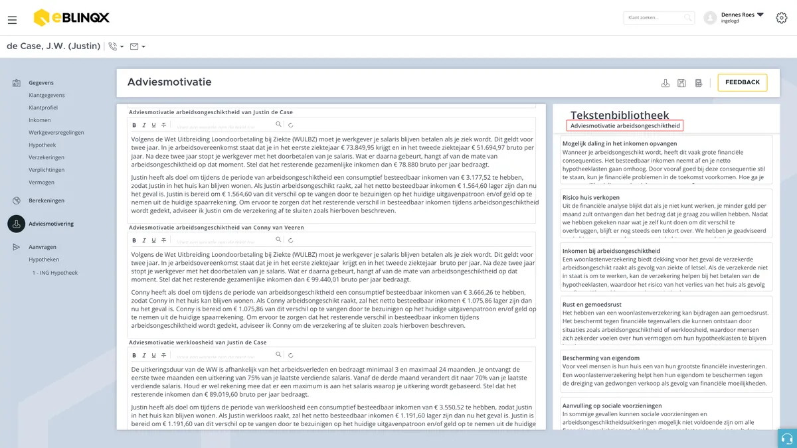
Subtitels in tekstenbibliotheek
We hebben nu aan de titel ‘Tekstenbibliotheek’ een subtitel toegevoegd, zodat de adviseur direct kan zien onder welk thema hij de teksten heeft opgeslagen.
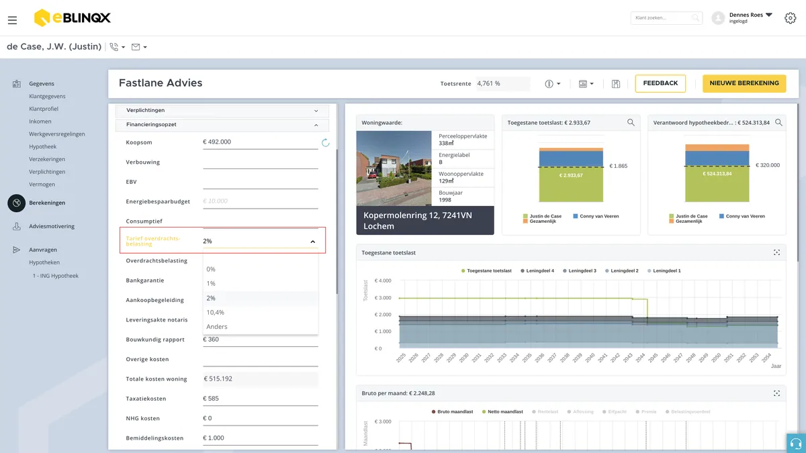
IT-20911: Dropdownmenu voor bepalen overdrachtsbelasting
Bij eBlinqx Hypotheekadvies Hypotheekadvies hebben we de financieringsopzet bij Fastlane Oriëntatie en Fastlane Advies uitgebreid met een pulldownmenu voor de overdrachtsbelasting. Dit menu is beschikbaar voor de doelstelling ‘Een bestaande woning kopen’. De standaardwaarde is ingesteld op 2%. De beschikbare keuzes in het pulldownmenu zijn:
- 0%
- 1%
- 2% (standaardwaarde)
- 10,4%
- Anders
Er zijn nu twee velden voor overdrachtsbelasting:
- Een dropdownmenu met bovenstaande keuzes.
- Een berekend veld dat vrij invulbaar is indien de adviseur de optie ‘Anders’ selecteert.
Met deze nieuwe functionaliteit kan de adviseur snel bepalen of een klant volledig in aanmerking komt voor vrijstelling van de overdrachtsbelasting (0%), of één van beide partners in aanmerking komt voor de vrijstelling (1%), of geen van beide consumenten in aanmerking komt voor de vrijstelling (2%), of dat het een onderpand betreft waarvoor de klant(en) niet de intentie heeft om daar zelf permanent te gaan wonen (10,4%).
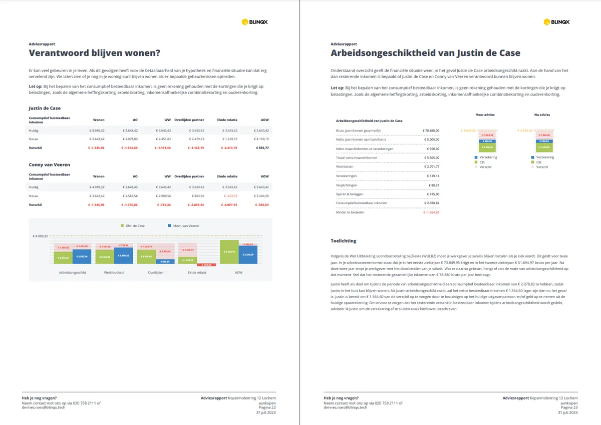
IT-20735: Adviesrapport beter leesbaar voor consument
Het voornemen om de leesbaarheid van het adviesrapport te verbeteren is nu gerealiseerd in Fastlane Advies. Op basis van ontvangen feedback hebben we de volgende aanpassingen doorgevoerd:
- Font sizes gecontroleerd en aangepast: We hebben de lettergrootte vergroot en deze gecontroleerd aan de hand van het design file om te zorgen dat alles overeenkomt.
- Tekstkleur aangepast: De lichtgrijze tekstkleur is vervangen door een donkerdere tekstkleur om de leesbaarheid te verbeteren.
Deze aanpassingen zorgen ervoor dat het adviesrapport nu nog beter leesbaar is voor de klant.
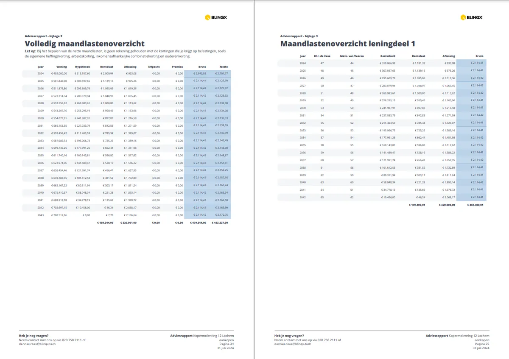
IT-20905: Leesbaarheid volledig maandlastenoverzicht verbeterd
In Fastlane Advies is nu de wijziging doorgevoerd waarbij de twee kolommen met leeftijden zijn weggelaten uit de bijlage 'Volledig maandlastenoverzicht' van ons adviesrapport. Hierdoor lopen de getallen en titels niet meer door elkaar of tegen elkaar aan, wat de leesbaarheid van het rapport aanzienlijk verbetert.
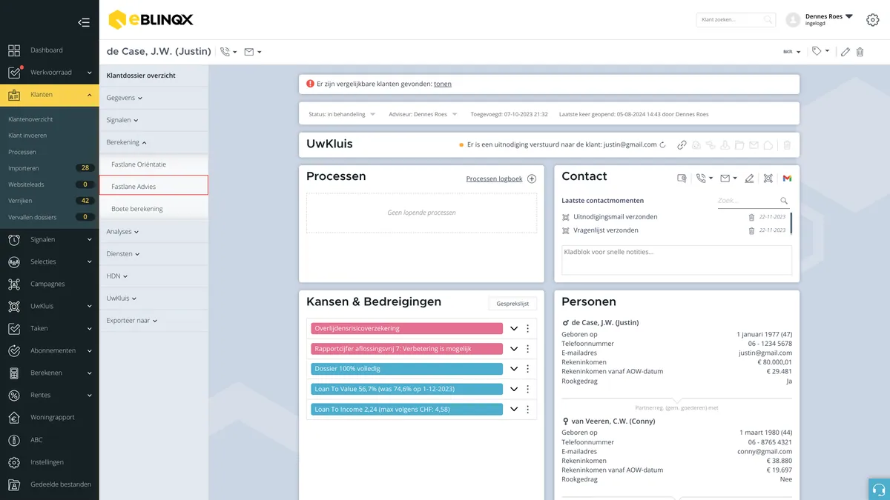
IT-20556: Rechtstreeks naar de berekening(en)
Wij hebben de URL achter de button Fastlane Advies aangepast, zodat de adviseur nu rechtstreeks naar het gedeelte gaat waar de berekeningen staan of gemaakt kunnen worden, in plaats van naar het inventarisatiegedeelte.
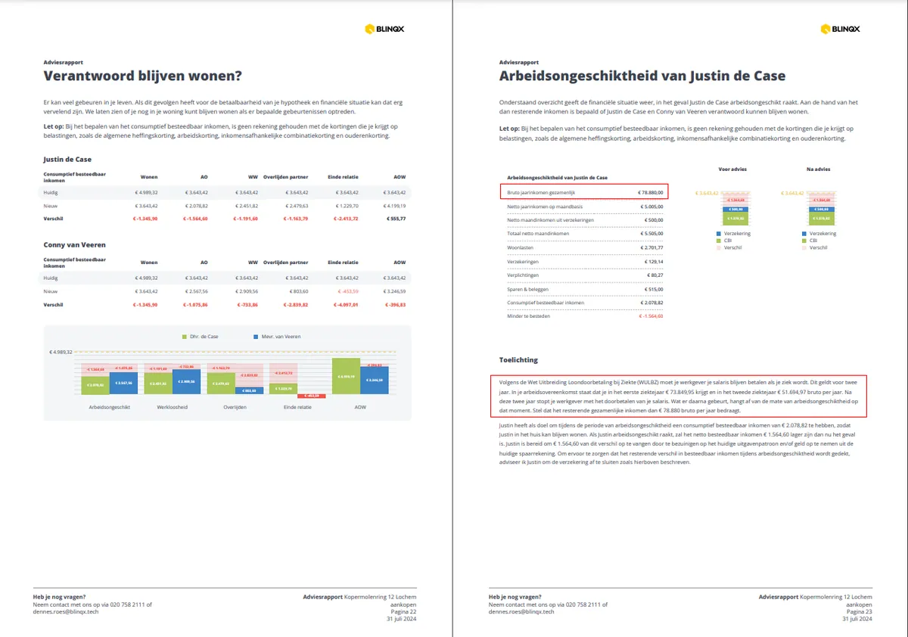
IT-20908: Toelichting tekst bij thema Arbeidsongeschiktheid
De toelichting bij het thema arbeidsongeschiktheid is nu herschreven zodat deze beter aansluit bij het resterende totale gezinsinkomen vanaf de startdatum van langdurige ziekte.
Volgens de Wet Uitbreiding Loondoorbetaling bij Ziekte (WULBZ) moet je werkgever je salaris blijven betalen als je ziek wordt. Dit geldt voor twee jaar. In je arbeidsovereenkomst staat dat je in het eerste ziektejaar € 73.849,95 krijgt en in het tweede ziektejaar € 51.694,97 bruto per jaar. Na deze twee jaar stopt je werkgever met het doorbetalen van je salaris. Wat er daarna gebeurt, hangt af van de mate van arbeidsongeschiktheid op dat moment. Stel dat het resterende gezamenlijke inkomen dan € 78.880 bruto per jaar bedraagt.
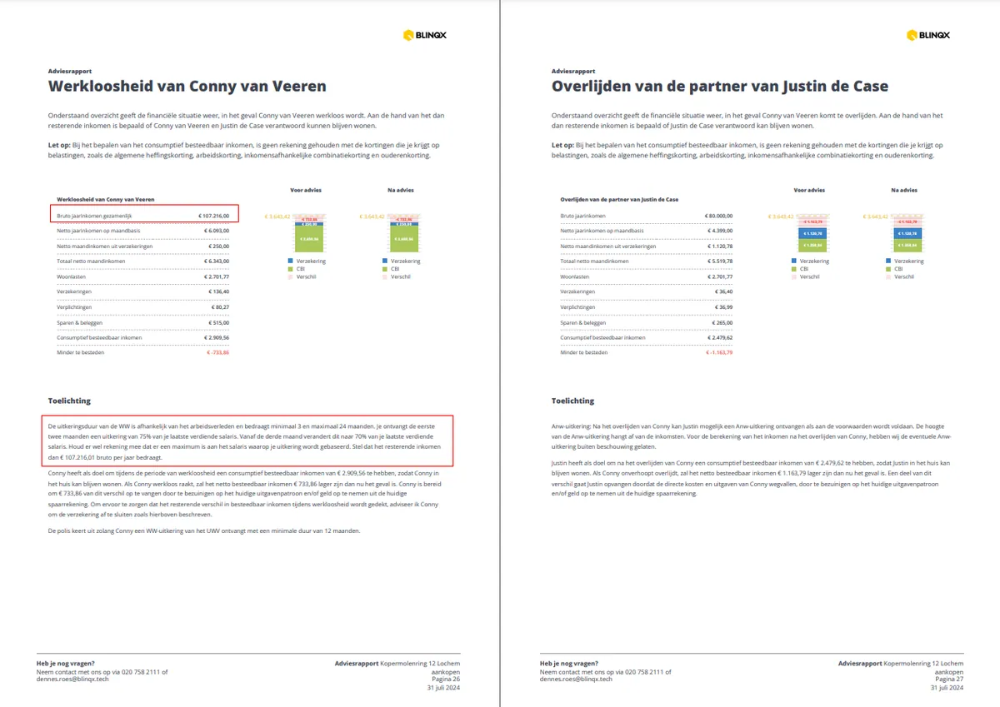
IT-20908: Toelichting tekst bij thema Werkloosheid
De toelichting bij het thema werkloosheid is nu herschreven zodat deze beter aansluit bij het resterende totale gezinsinkomen vanaf de ww-datum:
De uitkeringsduur van de WW is afhankelijk van het arbeidsverleden en bedraagt minimaal 3 en maximaal 24 maanden. Je ontvangt de eerste twee maanden een uitkering van 75% van je laatste verdiende salaris. Vanaf de derde maand verandert dit naar 70% van je laatste verdiende salaris. Houd er wel rekening mee dat er een maximum is aan het salaris waarop je uitkering wordt gebaseerd. Stel dat het resterende inkomen dan € 107.216,01 bruto per jaar bedraagt.
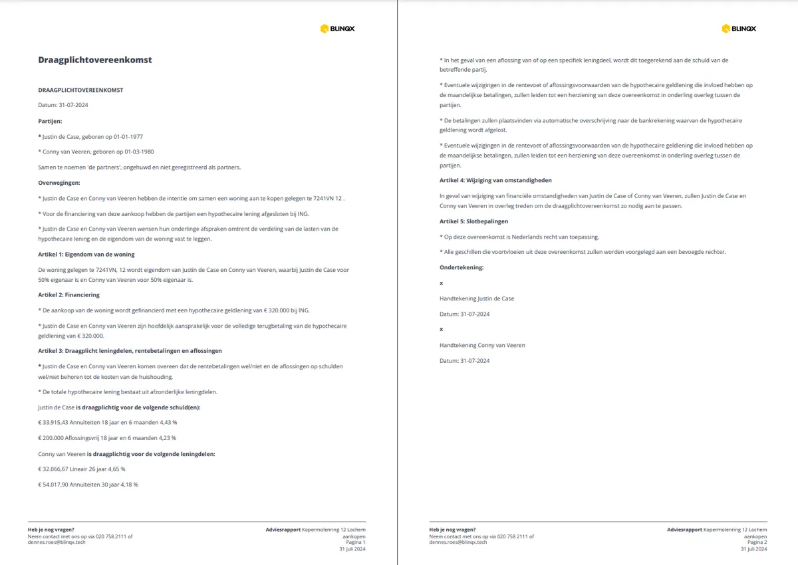
IT-20714: Draagplichtovereenkomst
Het is nu mogelijk om met behulp van de tekstbibliotheek automatisch je eigen versie van de Draagplichtovereenkomst te maken, compleet met dynamische velden. Met één druk op de knop heb je je eigen draagplichtovereenkomst klaar.
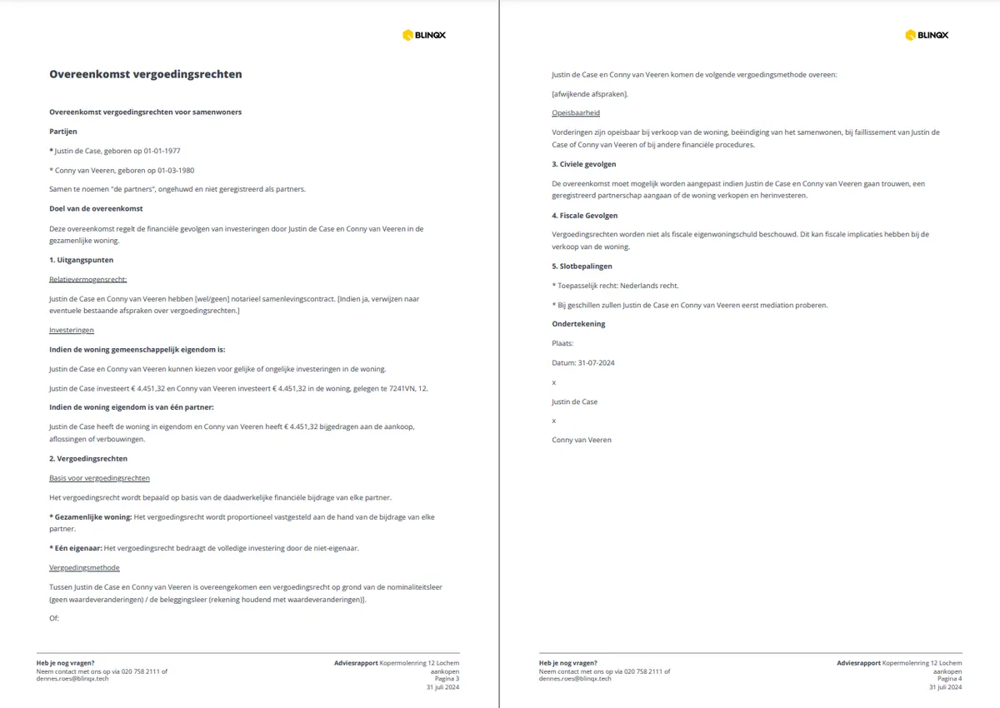
IT-20714: Overeenkomst vergoedingsrechten
Je kunt nu eenvoudig je eigen versie van de overeenkomst vergoedingsrechten samenstellen met behulp van de tekstbibliotheek. Dankzij dynamische velden is het document snel en automatisch aangepast aan jouw wensen. Met één druk op de knop is je overeenkomst vergoedingsrechten klaar.
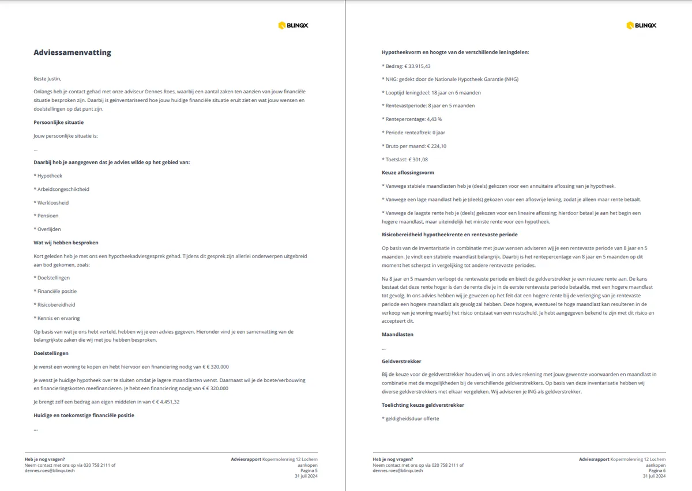
Pagina 1 en 2
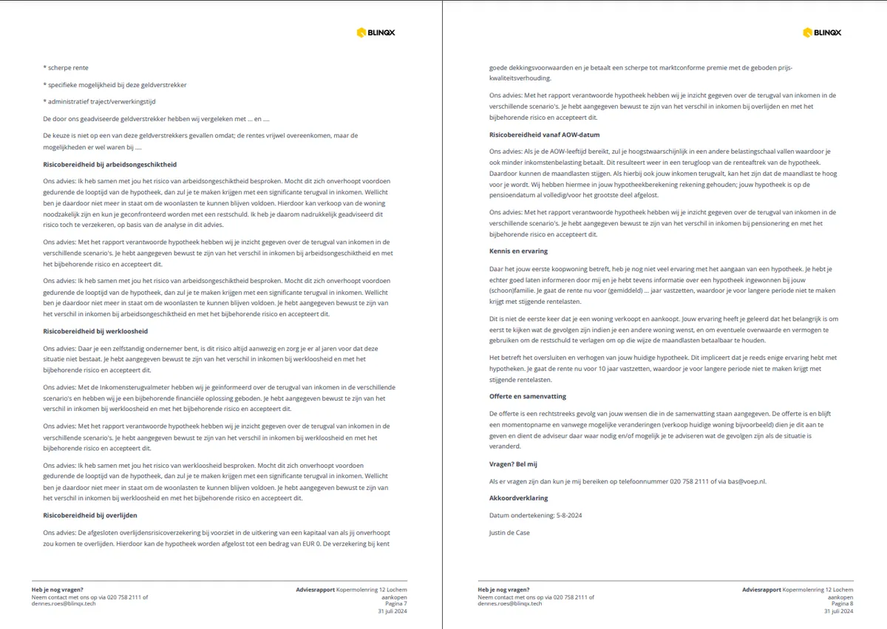
Pagina 3 en 4
IT-20714: Adviessamenvatting
Bespreek de samenvatting van het adviesrapport met je klant en leg stap voor stap de beslissingen uit die je advies ondersteunen. Je kunt nu gemakkelijk je eigen versie van de adviessamenvatting maken met de tekstbibliotheek. Door de dynamische velden wordt het document snel en automatisch aangepast aan jouw behoeften. Met één druk op de knop is je gepersonaliseerde adviessamenvatting klaar om met je klant door te nemen en te laten ondertekenen.